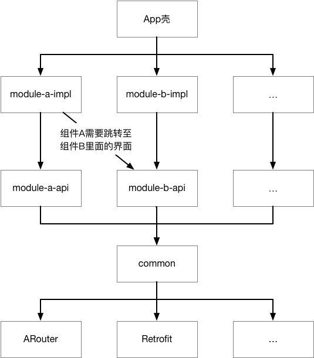
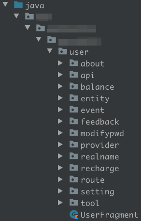
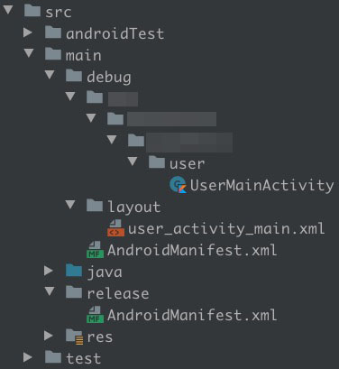

进行组件化开发有一段时间了，不久后就要开始一个新项目了，为此整理了目前项目中使用的组件化开发规范，方便在下一个项目上使用。本文的重点是介绍规范和项目架构，仅提供示例代码举例，目前不打算提供示例Demo。如果你还不了解什么是组件化以及如何进行组件化开发的话，建议请先看其他组件化入门文章。
定义
组件是 Android 项目中一个相对独立的功能模块，是一个抽象的概念，module 是 Android 项目中一个相对独立的代码模块。
在组件化开发的早期，一个组件就只有一个 module，导致很多代码和资源都会下沉到 common 中，导致 common 会变得很臃肿。有的文章说，专门建立一个 module 来存放通用资源，我感觉这样是治标不治本，直到后面看到微信Android模块化架构重构实践这篇文章，里面的"模块的一般组织方式"一节提到一个模块应该有多个工程，然后开始在项目对 module 进行拆分。
一般情况下，一个组件有两个 module，一个轻量级的 module 提供外部组件需要和本组件进行交互的接口方法及一些外部组件需要的资源，另一个重量级的 module 完成组件实际的功能和实现轻量级 module 定义的接口方法。
module 的命名规范请参考module名，在下文中使用 module-api 代表轻量级的 module，使用 module-impl 代表重量级的 module。
common组件
common 是一个特殊的组件，不区分轻量级和重量级，它是项目中最底层的组件，基本上所有的其他组件都会依赖 common 组件，common 中放项目中所有弱业务逻辑的代码和解决循环依赖的代码和资源。
一个完整的项目的架构如下：

弱业务逻辑代码
何为弱业务逻辑代码？简单来说，就是有一定的业务逻辑，但是这个业务逻辑对于项目中其他组件来说通用的。
比如在 common 组件集成网络请求库，创建一个 HttpTool 工具类，负责初始化网络请求框架，定义网络请求方法，实现组装通用请求参数以及处理全局通用错误等，对于其他组件直接通过这个工具类进行网络请求就可以了。
比如定义界面基类，处理一些通用业务逻辑，比如接入统计分析框架。
解决循环依赖的代码和资源
何为解决循环依赖的代码和资源？比如说 module-a-api 有一个类 C，module-b-api 中有一个类 D，在 module-a-api 中需要使用 D，在 module-b-api 中需要使用 C，这样就会造成 module-a-api 需要依赖 module-b-api，而 module-b-api 也会依赖 module-a-api，这就造成了循环依赖，在 Android Studio 中会编译失败。
解决循环依赖的方案就是将 C 和 D 其中的一个，或者两个都下沉到 common 组件中，因为 module-a-api 和 module-b-api 都依赖了 common 组件，至于具体下沉几个，这个根据具体的情况而定，但是原则是下沉到 common 组件的东西越少越好。
上面的举的例子是代码，资源文件同样也可能会有这个问题。
module代码结构
一个组件通常含有一个或多个功能点，比如对于用户组件，它有关于界面、意见反馈、修改账户密码等功能点，在 module 中为每一个功能点创建一个路径，里面放实现该功能的代码，比如 Activity、Dialog 、Adapter 等。除此之外，为了集中管理组件内部资源和统一编码习惯，特地将一部分的通用功能路径固定下来。这些路径包括 api、provider、tool 等。
一般情况下 module 的代码架构如下图：

api
该路径下放 module 内部使用到的所有网络请求路径和方法，一般使用一个类就够了，比如：UserApi：
1 | object UserApi { |
ApiVersion 全局管理目前项目中使用的所有 api 版本，应当定义在 common 组件的 api 路径下：
1 | object ApiVersion { |
entity
该路径下放 module 内部使用到的所有实体类（网络请求返回的数据类）。
对于所有从服务器获取的字段，全部定义在构造函数中，且实体类应当实现 Parcelable ，并使用 @Parcelize 注解。对于客户端使用而自己定义的字段，基本上定义为普通成员字段，并使用 @IgnoredOnParcel 注解，如果需要在界面间传递客户端定义的字段，可以将该字段定义在构造函数中，但是必须注明是客户端定义的字段。
示例如下：
1 |
|
其中 name 和 icon 是从服务器获取的字段，而 count 和 isSelected 是客户端自己定义的字段。
event
该路径下放 module 内部使用的事件相关类。对于使用了 EventBus 及类似框架的项目，放事件类，对于使用了 LiveEventBus 的项目，里面只需要放一个类就好，比如：UserEvent：
1 | object UserEvent { |
注意：对于使用
LiveEventBus的项目，事件的命名必须用组件名作为前缀，防止事件名重复。
route
该路径下放 module 内部所使用到的界面路径和跳转方法，一般使用一个类就够了，比如：UserRoute：
1 | object UserRoute { |
注意：对于组件内部会跳转的H5界面链接也应当写在路由类中。
provider
该路径下放对外部 module 提供的服务，一般使用一个类就够了。在 module-api 中是一个接口类，在 module-impl 中是该接口类的实现类。
目前采用 ARouter 作为组件化的框架，为了解耦，对其进行了封装，封装示例代码如下：
1 | typealias Route = com.alibaba.android.arouter.facade.annotation.Route |
示例
这里介绍如何在外部 module 和 user-impl 跳转至用户组件中的关于界面。
准备工作
在 user-impl 中创建路由类，编写关于界面的路由和服务路由及跳转至关于界面方法：
1 | object UserRoute { |
在关于界面使用路由：
1 |
|
在 user-api 中定义跳转界面方法：
1 | interface IUserService : IServiceProvider { |
在 user-impl 中实现跳转界面方法：
1 |
|
界面跳转
在 user-impl 中可以直接跳转到关于界面：
1 | UserRoute.toAbout().navigation(this) |
假设 module-a 需要跳转到关于界面，那么先在 module-a 中配置依赖：
1 | dependencies { |
在 module-a 中使用 provider 跳转到关于界面：
1 | RouteUtil.getServiceProvider(IUserService::class.java) |
module依赖关系
此时各个 module 的依赖关系如下：
1 | common：基础库、第三方库 |
tool
该路径下放 module 内部使用的工具方法，一般一个类就够了，比如：UserTool：
1 | object UserTool { |
cache
该路径下放 module 使用的缓存方法，一般一个类就够了，比如：UserCache：
1 | object UserCache { |
注意：
- 缓存Key的命名必须用组件名作为前缀，防止缓存Key重复。
CacheTool.userCache并不是指用户组件的缓存，而是用户的缓存，即当前登录账号的缓存，每个账号会单独存一份数据，相互之间没有干扰。与之对应的是CacheTool.globalCache，全局缓存，所有的账号会共用一份数据。
两种module的区别
module-api 中放的都是外部组件需要的，或者说外部组件和 module-impl 都需要的，其他的都应当放在 module-impl 中，对于外部组件需要的但是能通过 provider 方式提供的，都应当把具体的实现放在 module-impl 中，module-api 中只是放一个接口方法。
下表列举项目开发中哪些东西能否放 module-api 中：
| 类型 | 能否放 module-api |
备注 |
|---|---|---|
| 功能界面(Activity、Fragment、Dialog) | 不能 | 通过 provider 方式提供使用 |
| 基类界面 | 部分能 | 外部 module 需要使用的可以，其他的放 module-impl 中 |
| adapter | 部分能 | 外部 module 需要使用的可以，其他的放 module-impl 中 |
| provider | 部分能 | 只能放接口类，实现类放 module-impl 中 |
| tool | 部分能 | 外部 module 需要使用的可以，其他的放 module-impl 中 |
| api、route、cache | 不能 | 通过 provider 方式提供使用 |
| entity | 部分能 | 外部 module 需要使用的可以，其他的放 module-impl 中 |
| event | 部分能 | 对使用 EventBus 及类似框架的项目，外部组件需要的可以，其他还是放 module-impl 中对于使用了 LiveEventBus 的项目不能，通过 provider 方式提供使用 |
| 资源文件和资源变量 | 部分能 | 需要在 xml 文件中使用的可以， 其他的通过 provider 方式提供使用 |
注意：如果仅在
module-impl中存在工具类，则该工具类命名为xxTool。如果module-api和module-impl都存在工具类，则module-api中的命名为xxTool，module-impl中的命名为xxTool2。
组件单独调试
在开发过程中，为了查看运行效果，需要运行整个App，比较麻烦，而且可能依赖的其他组件也在开发中，App可能运行不到当前开发的组件。为此可以采用组件单独调试的模式进行开发，减少其他组件的干扰，等开发完成后再切换回 library 的模式。
在组件单独调试模式下，可以增加一些额外的代码来方便开发和调试，比如新增一个入口 Actvity，作为组件单独运行时的第一个界面。
示例
这里介绍在 user-impl 中进行组件单独调试。
在项目根目录下的 gradle.properties 文件中新增变量 isDebugModule，通过该变量控制是否进行组件单独调试：
1 | # 组件单独调试开关，为ture时进行组件单独调试 |
在 user-impl 的 build.gradle 的顶部增加以下代码来控制 user-impl 在 Applicaton 和 Library 之间进行切换：
1 | if (isDebugModule.toBoolean()) { |
在 user-impl 的 src/main 的目录下创建两个文件夹 release 和 debug，release 中放 library 模式下的 AndroidManifest.xml，debug 放 application 模式下的 AndroidManifest.xml、代码和资源，如下图所示：

在 user-impl 的 build.gradle 中配置上面的创建的代码和资源路径：
1 | android { |
注意：完成上述配置后，在
library模式下，debug中的代码和资源不会合并到项目中。
最后在 user-impl 的 build.gradle 中配置 applicationId：
1 | android { |
如果碰到65536的问题，在 user-impl 的 build.gradle 中新增以下配置：
1 | android { |
以上工作都完成后，将 isDebugModule 的值改为 true，则可以开始单独调试用户组件。
命名规范
module名
组件名如果是单个单词的，直接使用该单词 + api 或 impl 的后缀作为 module 名，如果是多个单词的，多个单词小写使用 - 字符作为连接符，然后在其基础上加 api 或 impl 的后缀作为 module 名。
示例
用户组件(User)，它的 module 名为 user-api 和 user-impl；会员卡组件(MembershipCard)，它的 module 名为 membership-card-api 和 membership-card-impl。
包名
在应用的 applicationId 的基础上增加组件名后缀作为组件基础包名。
在代码中的包名 module-api 和 module-impl 都直接使用基础包名即可，但是在 Android 中项目 AndroidManifest.xml 文件中的 package 不能重复，否则编译不通过。所以 module-impl 中的 package 使用基础包名，而 module-impl 中的 package 使用基础包名 + api 后缀。
package 重复的时候，会报 Type package.BuildConfig is defined multiple times 的错误。
示例
应用的 applicationId 为 cc.taylorzhang.demo，对于用户组件(user)，组件基础包名为 cc.taylorzhang.demo.user，则实际包名如下表：
| 代码中的包名 | AndroidManifest.xml中的包名 | |
|---|---|---|
user-api |
cc.taylorzhang.demo.user |
cc.taylorzhang.demo.userapi |
user-impl |
cc.taylorzhang.demo.user |
cc.taylorzhang.demo.user |
对于多单词的会员卡组件(MembershipCard)，其组件基础包名为 cc.taylorzhang.demo.membershipcard。
资源文件和资源变量
所有的资源文件：布局文件、图片等全部要增加组件名作为前缀，所有的资源变量：字符串、颜色等也全部要增加组件名作为前缀，防止资源名重复。
示例
- 用户组件(
User)，关于界面布局文件命名为：user_activity_about.xml； - 用户组件(
User)，关于界面标题字符串命名为：user_about_title； - 会员卡组件(
MembershipCard)，会员卡详情界面布局文件，文件名为：membership_card_activity_detail； - 会员卡组件(
MembershipCard)，会员卡详情界面标题字符串，文件名为：membership_card_detail_title；
类名
对于类名没必要增加前缀，比如 UserAboutActivity，因为对资源文件和资源变量增加前缀主要是为了避免重复定义资源导致资源被覆盖的问题，而上面的包名命名规范已经避免了类重复的问题，直接命名 AboutActivity 即可。
全局管理App环境
App 环境一般分为开发、测试和生产环境，不同环境下使用的网络请求地址大概率是不一样的，甚至一些UI都不一样，在打包的时候手动修改很容易有遗漏，产生不必要的 BUG。应当使用 buildConfigField 在打包的时候将当前环境写入 App 中，在代码中根据读取环境变量，根据不同的环境执行不同的操作。
示例
准备工作
在 App 壳 的 build.gradle 中给每个buildType 都配置 APP_ENV：
1 | android { |
注意：测试环境的
buildType不能使用test作为名字，Android Studio会报ERROR: BuildType names cannot start with 'test'，这里在test前增加了一个c。
在 common 的 tool 路径下创建一个App环境工具类：
1 | object AppEnvTool { |
在 Application 中初始化App环境工具类：
1 | class DemoApplication : Application() { |
使用App环境工具类
这里介绍根据App环境使用不同的网络请求地址：
1 | object CommonApi { |
打包
通过不同的命令打包，打出对应的App环境包：
1 | 打开发环境包 |
全局管理版本信息
项目中的 module 变多之后，如果要修改第三方库和App使用的SDK版本是一件很蛋疼的事情。应当建立一个配置文件进行管理，其他地方使用配置文件中设置的版本。
示例
在项目根目录下创建一个配置文件 config.gradle，里面放版本信息：
1 | ext { |
在项目根目录下的 build.gradle 文件中的最上方使用以下代码引入配置文件：
1 | apply from: "config.gradle" |
创建 module 后，修改该 module 中的 build.gradle 文件，将 SDK 版本默认值换成配置文件中的变量，按需添加第三方依赖，并使用 $ + 配置文件中的变量作为第三方库的版本：
1 | android { |
混淆
混淆文件不应该在 App 壳中集中定义，应当在每个 module 中各自定义自己的混淆。
示例
这里介绍配置 user-impl 的混淆，先在 user-impl 的 build.gradle 中配置消费者混淆文件：
1 | android { |
在 proguard-rules.pro 文件中写入该 module 的混淆：
1 | # 实体类 |
总结
组件化开发应当遵守"高内聚，低耦合"的原则，尽量少的对外暴露细节。如果用一句话来总结的话，就是代码和资源能放 module-impl 里面的就都放在 module-impl，因为代码隔离问题实在不能放 module-impl 里面的才放 module-api，最后因为涉及到循环依赖问题的才往 common 中放。